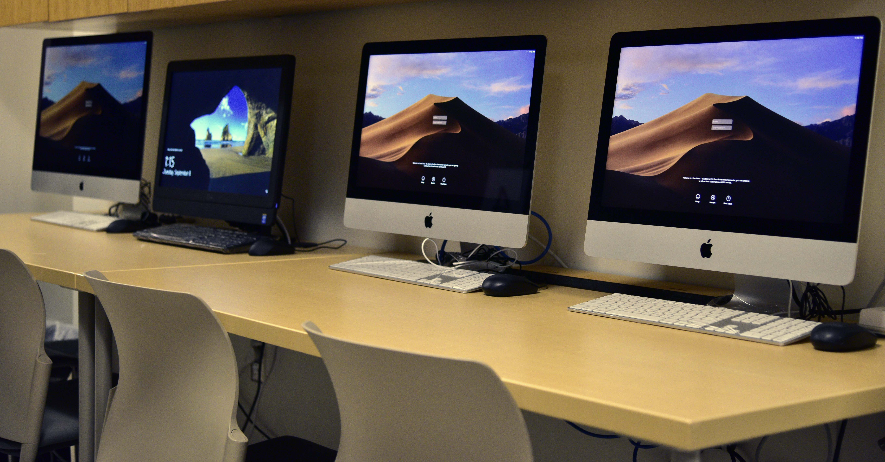
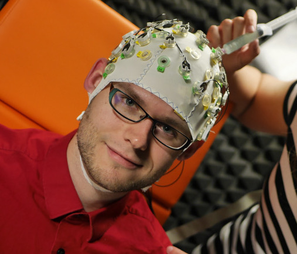
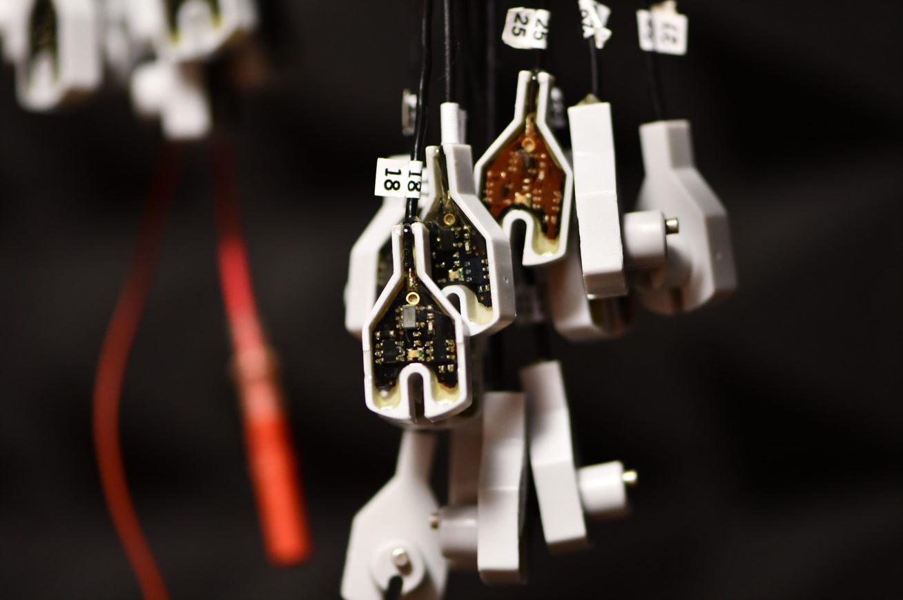
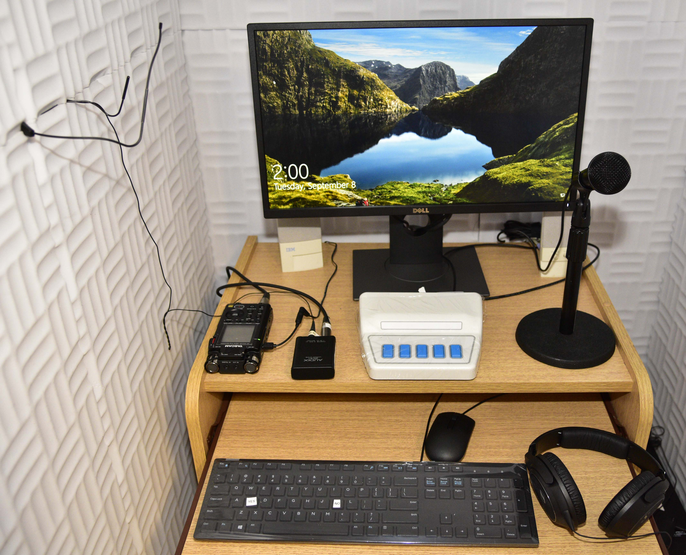
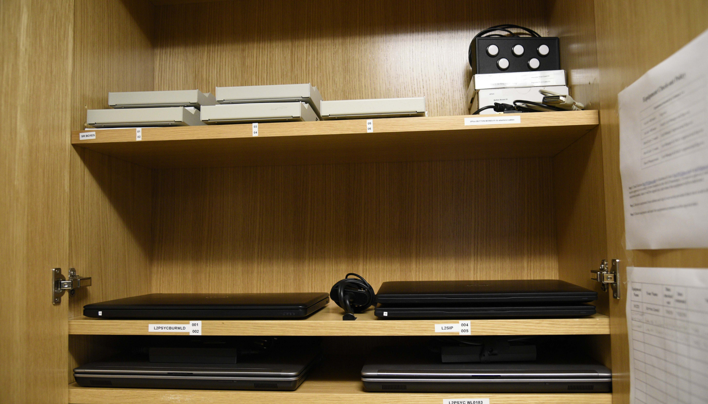
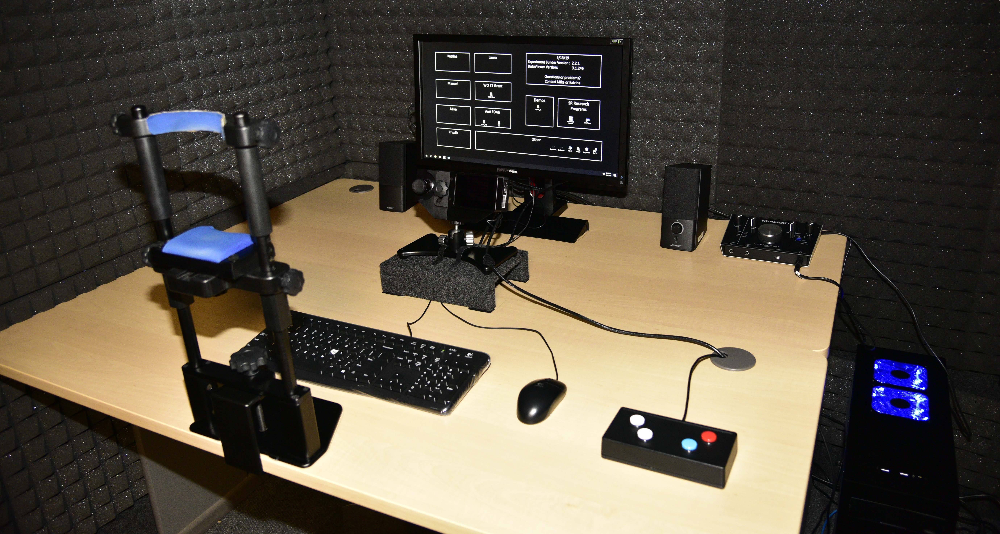
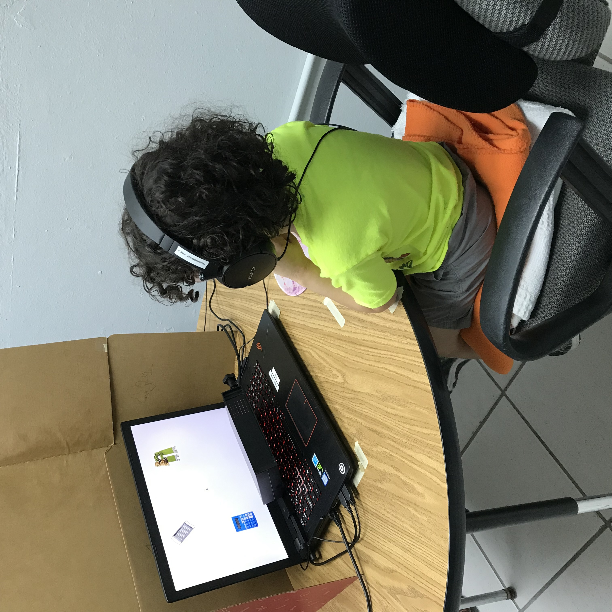

Lab Space
Lab Space
 The lab is located in Burrowes Building room 37 and occupies a XXXsqft space. This space is equipped with 6 Whisper Chambers, 4 sound attenuated booths and facilities for preparing and cleaning EEG supplies. The space houses equipment for 3 professors...etc

A second sound booth is currently (2021) being setup with another Brain Vision Electroencephalography (EEG) system, which will allow us to collect even more EEG data in the future.
These setups include the associated computers (display and EEG), as well as a 32-channel set of electrodes and 6 different sized caps for running experiments investigating electrical brain responses to visual or auditory stimuli.
EEG
EEG
 One sound booth is equipped with a Brain Vision
Electroencephalography (EEG) setup.
This setup includes the associated computers (display and EEG), as well as a 32-channel set of electrodes and
6 different sized caps for running experiments investigating electrical brain responses to visual or auditory
stimuli.
Electroencephalography (EEG)
noun | /əˌlektrōənˌsefəˈläɡrəfē/- The measurement of electrical activity in different parts of the brain and the recording of such activity as a visual trace (on paper or on an oscilloscope screen).
A second sound booth is currently (2021) being setup with another Brain Vision Electroencephalography (EEG) system, which will allow us to collect even more EEG data in the future.
These setups include the associated computers (display and EEG), as well as a 32-channel set of electrodes and 6 different sized caps for running experiments investigating electrical brain responses to visual or auditory stimuli.
Welcome to the Brain Tracking Lab!
Hover over the icons to explore our available lab facilities!

Behavioral Setups
Behavioral Setups
 The lab include 4 behavioral testing booths. Each booth is equipped with PCs, associated button boxes for use with Psychology Software Tools E-Prime and other experimental software (Psychology Software Tools SR & Chronos button boxes, as well as LabHackers Millikey boxes), digital flash recorders, compact disk recorders, and microphones for digital sound recording.Eye Tracking
Eye-Tracking
 One of our sound booths is equipped with an SR Research EyeLink 1000 Plus desktop mounted eye tracker. This setup includes the eye tracker and associated computers (display and host), a head rest, a LabHackers Millikey box, and a USB M-Audio M-Track 2X2M C-Series sound card for running visual world experiments.  The lab also has 2 EyeLink Portable Duo
systems to take our eye-tracking research on the road!
The lab also has 2 EyeLink Portable Duo
systems to take our eye-tracking research on the road!
Eye-Tracking
Eye-Tracking
noun | lo·co·mo·tion- movement or the ability to move from one place to another